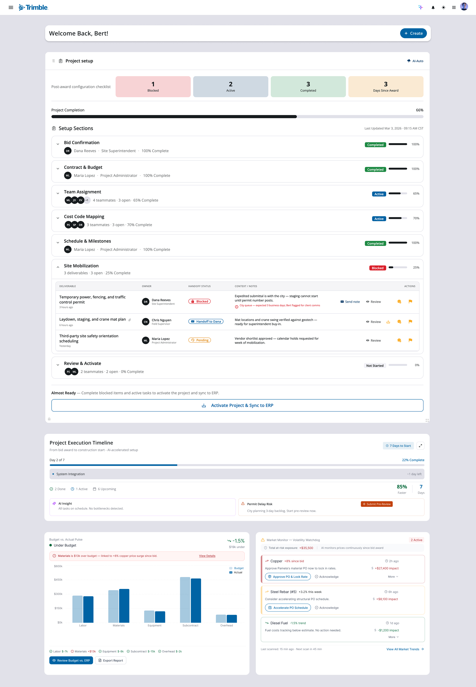
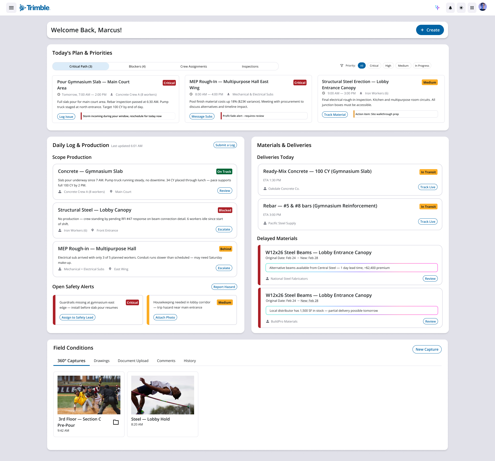
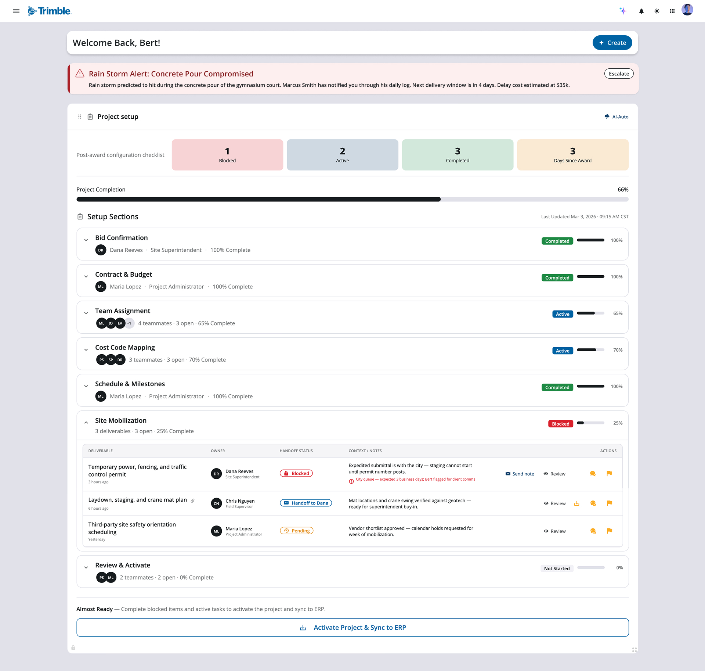

WorkCenter — Unified Platform Revamp
Designing interfaces for WorkCenter, a Trimble platform being reimagined as a single connected hub for construction teams. The revamp removes the need for separate access across products and uses agentic AI to streamline workflows across the project lifecycle.
Overview
WorkCenter today is a portal contractors use to reach a handful of Trimble products, each requiring its own access and living in its own silo. The revamp reimagines WorkCenter as a unified workspace where capabilities, data, and AI-driven workflows live together in one place — organized around how construction teams actually work, not around which product each task belongs to.
Problem
Construction teams rely on a sprawling stack of tools for bidding, estimating, scheduling, procurement, field, and finance work. Those tools don't share data or context, so teams jump between systems to piece together a single view of a project. The interfaces needed to surface unified data and agentic AI actions in a way that feels familiar to construction workflows, without asking users to learn a new mental model on top of the work they already do.
My Role
Designing the interfaces where unified data and agentic AI meet the user.
I worked alongside UX managers, senior designers, and a technical intern on the WorkCenter design team. My contributions focused on the interface layer — translating cross-team strategy into screens that feel coherent, contextual, and grounded in real construction workflows.
- Designed key interfaces across the WorkCenter experience.
- Partnered with senior designers and managers to align on patterns, components, and AI interaction language.
- Iterated on screens based on team critique and evolving product direction.
Designs
One platform, a dashboard that adapts to your role.
Rather than a single generic landing page, WorkCenter shapes its home view around who's signed in. The same unified data and agentic AI surface differently for a project manager overseeing the whole portfolio versus an estimator deep in a single bid — each persona lands on the work that matters most to them.
GC / Project Manager
Portfolio-level overview
A wide view across every project — estimate progress, prioritized tasks with AI-flagged risks, and an at-a-glance schedule for managing the whole book of work.

Estimator
Bid-level workspace
A focused view into a single estimate — a shared bid assembly hub, deliverable handoffs and statuses, and live supplier pricing pulled in to keep the number accurate.

One project, one thread — from a won bid to a weather call that reaches the PM in minutes.
The clearest way to show what the revamp unlocks is to follow a single job through it. Eldorado is a recreation-center build — a gymnasium, a multipurpose hall, and a lobby entrance canopy. Here's how one platform carries that project from an awarded bid, into the field, and back to the project manager's desk — without anyone re-entering the work.
-
Just after award · Bert, project manager
01The bid is won — and the hub is already built.
Pamela's winning estimate doesn't get re-keyed or handed off in a slide deck. The moment Eldorado is awarded, WorkCenter syncs the bid, budget, and scope into a single post-award hub and hands Bert a configuration checklist instead of a blank project. Three days after award he's already 66% set up — bid and contract confirmed, schedule and milestones locked, team and cost codes mapping in. The one thing standing between him and a live, ERP-synced project is flagged in plain sight: Site Mobilization is blocked on a city permit, with the owner and the exact queue time called out so Bert knows precisely what to chase. Everything that used to live in scattered spreadsheets and email threads is staged in one place, ready to activate.

-
Out on the jobsite · Marcus, field foreman
02Ball rolling — and the field sees the risk before it happens.
Fast-forward: the project is live and the work has momentum. Marcus opens his dashboard to the day's critical path — and the gymnasium slab pour, scheduled for 7 AM tomorrow, carries an AI-surfaced warning: a storm is forecast to hit inside the pour window. Concrete doesn't wait, and a compromised pour is expensive to redo. Marcus doesn't have to phone the office or dig for the right form — he taps Log Issue, and the weather risk drops straight into his daily log, the running record of everything that happens on site. WorkCenter already has the context wrapped around it: the 100 CY of ready-mix is in transit with a 1:30 ETA, the crew is staffed, and the pour reads "On Track" right up until he flags it.

-
Back in the office · Bert, project manager
03The PM knows in minutes — not at the morning meeting.
Because the field and the office share one system, Marcus's log entry doesn't sit in a notebook until tomorrow's standup — it surfaces at the top of Bert's hub as a red alert: Concrete Pour Compromised. The same entry that took Marcus one tap to file now tells Bert everything he needs to make the call: the storm hits during the gymnasium pour, Marcus flagged it through his daily log, the next delivery window is four days out, and the estimated delay cost is $35K. One tap to escalate. No status chase, no telephone game between trailer and office — the signal that began as Pamela's estimate and Marcus's field observation reaches the decision-maker as a single, costed, actionable thread.

That's the throughline of the revamp: one project, one source of truth, and agentic AI that moves the right signal to the right person — across estimating, the office, and the field — so a weather call that could cost $35K reaches the person who can act on it while there's still time to act.
Reflection
Designing for a platform this big meant designing for the connections, not just the screens.
The hardest and most rewarding part of WorkCenter wasn't any single interface — it was making separate products, roles, and moments feel like one continuous system. Working alongside senior designers and managers, I learned to zoom out from "what does this screen need" to "what does this person need to know right now, and where did that information come from." That shift in altitude changed how I designed everything that followed.
What worked
Anchoring the work in real construction workflows kept the AI grounded — it surfaced risk and context people actually act on, instead of novelty. Designing the home view around roles, then proving it with an end-to-end scenario, made the value easier to feel than any feature list could.
What I'd change
I'd get these flows in front of real contractors and estimators sooner. A lot of the logic held up in critique, but field users have instincts about edge cases — bad weather, delayed materials, crew changes — that I could only approximate from the outside.
What's next
I want to keep pushing on the agentic layer: how much should the system recommend versus decide, and how do we keep people in control as it gets more capable? That balance of trust and automation is the question I'm most excited to design around next.
This is as much as I can share. WorkCenter is confidential, so the screens and story here are the most I'm able to show publicly — I'd love to walk through the deeper thinking, trade-offs, and process in conversation.